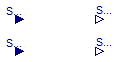

| Name | Description |
|---|---|
| Control_Acumulador_Orden | Bloque que controla el balance de energia a nivel interno en un volumen de fluido. Modela el fenomeno de estratificacion por ordenamiento de carga |
| Control_Caldera | Bloque de control de la caldera |
| Control_Circulador | Bloque de control del circulador |
| Control_Colector | Bloque de control del colector o caprador solar |
| Control_Interacumulador_Mezcla | Bloque que controla el balance de energia a nivel interno en un volumen de fluido. Modela el fenomeno de estratificacion por mezcla de volumenes |
| Control_Monomando | Bloque que controla la regulacion de la griferia monomando |
| Type | Name | Default | Description |
|---|---|---|---|
| Medium | medium | Modelica.Thermal.FluidHeatFl... | Medio del volumen de control a controlar |
| Integer | n | 3 | Numero de segmentos del volumen de control |
| Real | volumen | 1 | Volumen del volumen de control |
| Real | altura | 1 | Altura o longitud del volumen de control |
| Type | Name | Description |
|---|---|---|
| input RealInput | T_in | |
| input RealInput | m_flow | |
| HeatPort_a | port_a | |
| HeatPort_b | puertoInt[n] |
model Control_Acumulador_Orden
"Bloque que controla el balance de energia a nivel interno en un volumen de fluido. Modela el fenomeno de estratificacion por ordenamiento de carga"
Modelica.Blocks.Interfaces.RealInput T_in;
Modelica.Blocks.Interfaces.RealInput m_flow;
Modelica.Thermal.HeatTransfer.Interfaces.HeatPort_a port_a;
parameter Modelica.Thermal.FluidHeatFlow.Media.Medium medium=Modelica.Thermal.FluidHeatFlow.Media.Medium()
"Medio del volumen de control a controlar";
parameter Integer n=3 "Numero de segmentos del volumen de control";
parameter Real volumen=1 "Volumen del volumen de control";
parameter Real altura=1 "Altura o longitud del volumen de control";
Modelica.Thermal.HeatTransfer.Interfaces.HeatPort_b puertoInt[n];
Real Q_int
"Flujo de calor intercambiador con medio exteriores al volumen de control";
Real Q_in[n] "Flujo de calor entrante en cada volumen";
Real Q_cond[n]
"Flujo de calor intercambiado por conduccion entre capas vecinas";
Real Q_neto[n] "Flujo de calor neto recibido por cada volumen de control";
equation
//Balance de energía neta que entra en el volumen
Q_int=noEvent(if m_flow>0.0001 then m_flow*medium.cp*(T_in-puertoInt[n].T) else 0);
port_a.Q_flow=Q_int;
//Determinacion flujo de calor por los puertos del deposito
//Flujo de calor entrante desde el exterior
Q_in[1]=noEvent(if (T_in>=puertoInt[1].T) then -Q_int else 0);
for i in 2:n loop
Q_in[i]=noEvent(if (T_in>=puertoInt[i].T and puertoInt[i-1].T>T_in) then -Q_int else 0);
end for;
//Flujo de calor por el fenomeno de conduccion de calor
Q_cond[1]=-(((volumen/altura)*medium.lamda*(puertoInt[1+1].T-puertoInt[1].T))/(altura/n));
for i in 2:n-1 loop
Q_cond[i]=-(((volumen/altura)*medium.lamda*(puertoInt[i-1].T-puertoInt[i].T))/(altura/n)+
((volumen/altura)*medium.lamda*(puertoInt[i+1].T-puertoInt[i].T))/(altura/n));
end for;
Q_cond[n]=-(((volumen/altura)*medium.lamda*(puertoInt[n-1].T-puertoInt[n].T))/(altura/n));
//Balance de todos los flujos de calor
Q_neto[1]=Q_in[1]+Q_cond[1];
for i in 2:n loop
Q_neto[i]=Q_in[i]+Q_cond[i];
end for;
//Flujo calor neto en cada elemento
for i in 1:n loop
puertoInt[i].Q_flow=Q_neto[i];
end for;
end Control_Acumulador_Orden;
| Type | Name | Default | Description |
|---|---|---|---|
| Real | caudalMinACS | 1 | |
| Real | rendimientoInstantaneo | 1 | |
| Real | GradoModulacionMin | 1 | |
| Real | PotenciaNominal | 1 | |
| Real | PCCombustible | 1 | |
| Real | TempRegulacion | 1 | |
| Medium | medium | Modelica.Thermal.FluidHeatFl... |
| Type | Name | Description |
|---|---|---|
| input RealInput | T_in | |
| output RealOutput | potenciaTeorica | |
| input RealInput | V_flow_in | |
| input RealInput | Pot_Real |
model Control_Caldera "Bloque de control de la caldera"
Modelica.Blocks.Interfaces.RealInput T_in;
Modelica.Blocks.Interfaces.RealOutput potenciaTeorica;
Modelica.Blocks.Interfaces.RealInput V_flow_in;
Modelica.Blocks.Interfaces.RealInput Pot_Real;
Real encendido
"Variable que determina si existe el caudal minima para que la caldera se encienda";
Real gastoInstantaneoCombustible "Gasto de combustible";
//Parametros para el control. Se tienen que definir en las especificaciones
parameter Real caudalMinACS=1;
parameter Real rendimientoInstantaneo=1;
parameter Real GradoModulacionMin=1;
parameter Real PotenciaNominal=1;
parameter Real PCCombustible=1;
parameter Real TempRegulacion=1;
parameter Modelica.Thermal.FluidHeatFlow.Media.Medium medium=Modelica.Thermal.FluidHeatFlow.Media.Medium();
equation
encendido=noEvent(if (V_flow_in>caudalMinACS) then 1 else 0);
//Energia aportada al fluido
potenciaTeorica=noEvent(
if T_in<273.15+20 then PotenciaNominal*encendido else
if (T_in>=273.15+TempRegulacion-30 and T_in<273.15+TempRegulacion-15) then PotenciaNominal*(((1-GradoModulacionMin)/2)+GradoModulacionMin)*encendido else
if (T_in>=273.15+TempRegulacion-15 and T_in<273.15+TempRegulacion) then PotenciaNominal*GradoModulacionMin*encendido else
0);
//Gasto combustible
gastoInstantaneoCombustible=(potenciaTeorica/(rendimientoInstantaneo*PCCombustible));
end Control_Caldera;
| Type | Name | Default | Description |
|---|---|---|---|
| Power | pot_elec_nom | Potencia electrica consumida en condiciones nominales [W] |
| Type | Name | Description |
|---|---|---|
| input RealInput | SenalEntrada | |
| output BooleanOutput | y |
model Control_Circulador "Bloque de control del circulador"
Modelica.Blocks.Interfaces.RealInput SenalEntrada;
Modelica.SIunits.Power cons_elec "Consumo electrico instantaneo";
parameter Modelica.SIunits.Power pot_elec_nom
"Potencia electrica consumida en condiciones nominales";
Modelica.Blocks.Interfaces.BooleanOutput y;
equation
//control salida booleana
y=if SenalEntrada>0 then true else false;
cons_elec=noEvent(if SenalEntrada>0 then pot_elec_nom else 0);
end Control_Circulador;
| Type | Name | Default | Description |
|---|---|---|---|
| Especificaciones | espec | Soltermica.ColectoresSolares... | Especificaciones propias del captador solar |
| Type | Name | Description |
|---|---|---|
| input RealInput | senalIrradiacion | Senal de irradiacion solar incidente |
| input RealInput | senalTemperaturaAmbiente | Senal de temperatura ambiental exterior |
| input RealInput | senalTemperaturaCaptador | Senal de la temperatura del captador. Utilizada para el control |
| input RealInput | factorSombras | Factor de 1 a 0 que representa el porcentaje de perdidas por sombras arrojadas al captador |
| output RealOutput | ganancias | ganancia de calor debidas a la radiacion incidente |
| output RealOutput | perdidas | perdidas de calor debidas a la conveccion con el exterior (cuendo este esta mas frio) |
model Control_Colector
"Bloque de control del colector o caprador solar"
Modelica.Blocks.Interfaces.RealInput senalIrradiacion
"Senal de irradiacion solar incidente";
Modelica.Blocks.Interfaces.RealInput senalTemperaturaAmbiente
"Senal de temperatura ambiental exterior";
Modelica.Blocks.Interfaces.RealInput senalTemperaturaCaptador
"Senal de la temperatura del captador. Utilizada para el control";
Modelica.Blocks.Interfaces.RealInput factorSombras
"Factor de 1 a 0 que representa el porcentaje de perdidas por sombras arrojadas al captador";
Modelica.Blocks.Interfaces.RealOutput ganancias
"ganancia de calor debidas a la radiacion incidente";
Modelica.Blocks.Interfaces.RealOutput perdidas
"perdidas de calor debidas a la conveccion con el exterior (cuendo este esta mas frio)";
Real Rend_captador(min=0,max=1)
"Rendimiento instantáneo del captador. Mirar como se define de 0 a 1";
Real T_corregida
"Variable comunmente utilizada en la documentacion tecnica. Es la diferencia entre la temperatura del captador y la del ambiente partido por la irradiacion";
parameter Soltermica.ColectoresSolares.CatalogoEquipos.Especificaciones espec
= Soltermica.ColectoresSolares.CatalogoEquipos.Especificaciones()
"Especificaciones propias del captador solar";
equation
//Ganancia solar
ganancias=espec.A_apertura*senalIrradiacion*espec.Rend_optico*espec.IAM_50*(1-factorSombras);
//Perdidas ambiente
perdidas=noEvent(if senalTemperaturaCaptador>senalTemperaturaAmbiente then -espec.A_apertura*(espec.Coef_perdidas_1*(senalTemperaturaCaptador-senalTemperaturaAmbiente)+espec.Coef_perdidas_2*(senalTemperaturaCaptador-senalTemperaturaAmbiente)^2) else 0);
//Temperatura corregida
T_corregida=noEvent(if senalTemperaturaCaptador>senalTemperaturaAmbiente then (senalTemperaturaCaptador-senalTemperaturaAmbiente)/senalIrradiacion else 0);
//Rendimiento captador
Rend_captador=noEvent(if (senalIrradiacion>1 and T_corregida>0 and abs(perdidas)<ganancias) then espec.Rend_optico-espec.Coef_perdidas_1*T_corregida-espec.Coef_perdidas_2*(T_corregida^2)/senalIrradiacion else 0);
//and abs(perdidas)<ganancias
end Control_Colector;
| Type | Name | Default | Description |
|---|---|---|---|
| Medium | medium | Modelica.Thermal.FluidHeatFl... | |
| Integer | n | 3 | |
| Real | volumen | 1 | |
| Real | altura | 1 | |
| Real | cteTiempo | 1 | Constante de tiempo para el fenomeno de inversion de temperatura |
| Type | Name | Description |
|---|---|---|
| HeatPort_b | puertoInt[n] |
model Control_Interacumulador_Mezcla
"Bloque que controla el balance de energia a nivel interno en un volumen de fluido. Modela el fenomeno de estratificacion por mezcla de volumenes"
Modelica.Thermal.HeatTransfer.Interfaces.HeatPort_b puertoInt[n];
Real Q_cond[n]
"Flujo de calor intercambiado por conduccion entre capas vecinas";
Real Q_invTemp[n] "Flujo de calor producido por inversion de temperaturas";
Real Q_neto[n] "Flujo de calor neto recibido por cada volumen de control";
parameter Modelica.Thermal.FluidHeatFlow.Media.Medium medium=Modelica.Thermal.FluidHeatFlow.Media.Medium();
parameter Integer n=3;
parameter Real volumen=1;
parameter Real altura=1;
parameter Real cteTiempo=1
"Constante de tiempo para el fenomeno de inversion de temperatura";
equation
//Determinacion flujo de calor por los puertos del deposito
//Flujo de calor por el fenomeno de conduccion de calor
Q_cond[1]=(((volumen/altura)*medium.lamda*(puertoInt[1+1].T-puertoInt[1].T))/(altura/n));
for i in 2:n-1 loop
Q_cond[i]=(((volumen/altura)*medium.lamda*(puertoInt[i-1].T-puertoInt[i].T))/(altura/n)+
((volumen/altura)*medium.lamda*(puertoInt[i+1].T-puertoInt[i].T))/(altura/n));
end for;
Q_cond[n]=(((volumen/altura)*medium.lamda*(puertoInt[n-1].T-puertoInt[n].T))/(altura/n));
//Flujo de calor por el fenomeno de inversion de temperatura
for i in 1:n-1 loop
Q_invTemp[i]=noEvent(if puertoInt[i+1].T-puertoInt[i].T>0 then ((volumen/altura)*medium.cp*(((puertoInt[i+1].T+puertoInt[i].T)/2)-puertoInt[i].T))/cteTiempo else 0);
end for;
Q_invTemp[n]=0;
//Balance de todos los flujos de calor
Q_neto[1]=Q_cond[1]+Q_invTemp[1];
for i in 2:n loop
Q_neto[i]=Q_cond[i]+Q_invTemp[i]-Q_invTemp[i-1];
end for;
//Flujo calor neto en cada elemento
for i in 1:n loop
puertoInt[i].Q_flow=-Q_neto[i];
end for;
end Control_Interacumulador_Mezcla;

| Type | Name | Description |
|---|---|---|
| input RealInput | SenalCaudal | Senal de caudal entre 0 y 1. Corresponde al porcentaje de apertura total de grifo |
| input RealInput | SenalTemperatura | Senal de temperatura entre 1 y -1. Corresponde al porcentaje de caudal de agua caliente (positiva) y agua fria (negativa) |
| output RealOutput | SenalCaliente | Senal de apertura del agua caliente |
| output RealOutput | SenalFria | Senal de apertura del agua fria |
model Control_Monomando
"Bloque que controla la regulacion de la griferia monomando"
Modelica.Blocks.Interfaces.RealInput SenalCaudal
"Senal de caudal entre 0 y 1. Corresponde al porcentaje de apertura total de grifo";
Modelica.Blocks.Interfaces.RealInput SenalTemperatura
"Senal de temperatura entre 1 y -1. Corresponde al porcentaje de caudal de agua caliente (positiva) y agua fria (negativa)";
Modelica.Blocks.Interfaces.RealOutput SenalCaliente
"Senal de apertura del agua caliente";
Modelica.Blocks.Interfaces.RealOutput SenalFria
"Senal de apertura del agua fria";
equation
SenalCaliente=SenalCaudal*(0.5*SenalTemperatura+0.5);
SenalFria=SenalCaudal*(-0.5*SenalTemperatura+0.5);
end Control_Monomando;